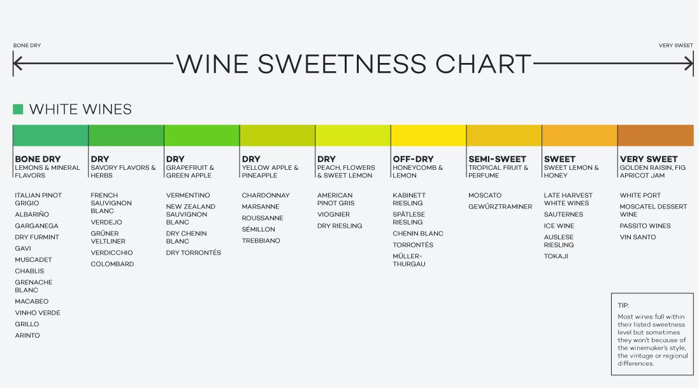
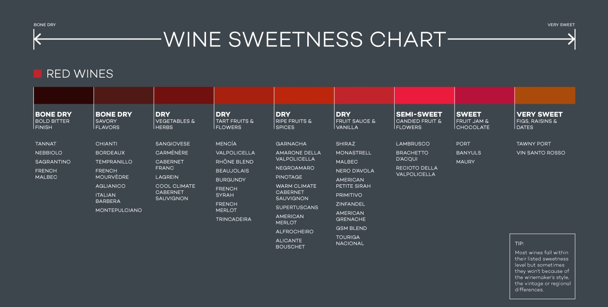

White

- Chardonnay
- Chardonnay is a very popular white wine that pairs well with fish and chicken. This wine typically tastes of citrus with buttery tones of vanilla, coconut, and coffee.
- Sauvignon Blanc
- Sauvignon Blanc is a very versitile wine that pairs with seafood, poulty, and salads. This is an herbal wine with flavors of apples, pears, and tropical fruits.
- Moscato
- Moscato is a sweeter wine that is fruity and is best enjoyed on its own or with dessert.
- Pinot Grigio
- Pinot Grigio is a very versatile wine that pairs with most foods. It is very dry with an acidic bite. It goes very well with Thai or spicy Chinese dishes.
- Riesling
- Riesling has both sweet and dry versions. The dry versions go well with fish, pork, and chicken. The sweet versions go well by themselves or with desserts.
- Viognier
- Viognier is a rich exotically fruity white wine. It generally pairs well with spicy dishes like Pad Thai. It also pairs with fruity chicken or lamb, shellfish, and creamy cheeses.
Red

- Merlot
- Merlot is seen as easy to drink and will pair with anything. It typically tastes of blackcherry, plums, and herbal flavors.
- Cabernet Sauvignon
- Cabernet Sauvignon is a blend that pairs well with red meat and has a very rich flavor that will linger in your mouth.
- Malbec
- Malbec pairs with all meat based meals especially Mexican, Cajun, and Indian dishes.
- Pinot Noir
- Pinot Noir pairs well with grilled salmon, chicken, lamb, and Japanese dishes. This wine tends to be fruity with notes of tea-leaves or earthy flavors.
- Zinfandel
- Zinfandel is very versatile and can make everything from a white Zinfandel to a deep red Zinfandel. This wine goes well with tomato-sauce pastas, pizza, grilled or BBQ meats. This wine can taste very zesty with a berry and pepper flavor.
- Sangiovese
- Sangiovese is good for Italian or Mediterranean dishes. It has fresh berry and plum flavors.
- Syrah
- Syrah is a full bodied red wine that pairs well with grilled lamb and BBQ pork. Syrah has olive-like flavors, blackberry hints and sweet tobacco flavors.